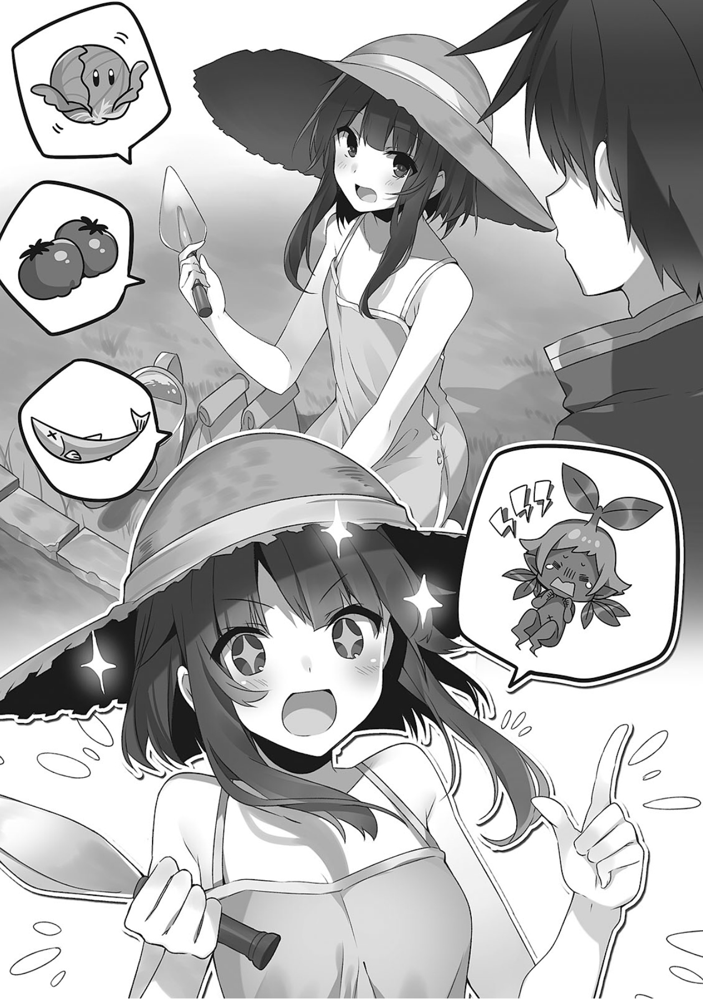
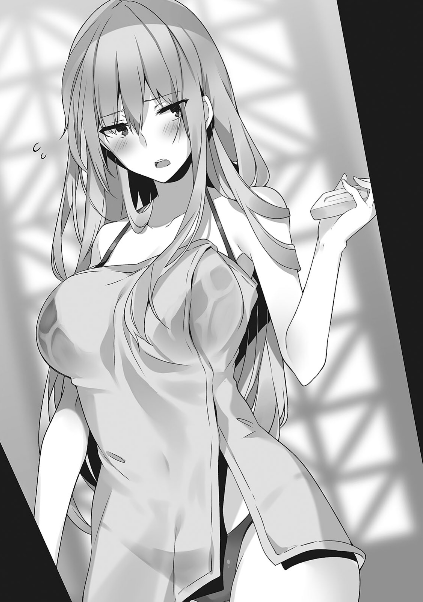

1
「和真和真，我有件事想拜托你」
第二天早上。
正在我吃完迟来的早饭喝着咖啡醒神的时候，不知为何肩上担着铲子的阿库娅对我这么说。
「什么啊，要零花钱我可是不会给的哦？这个月的已经给过了，而且昨天从宝岛背上得来的矿石也够你大赚一笔了吧」
「才不是。我是想借助和真你作为冒险者的能力」
作为冒险者的能力？
「你一大早就说这些怪吓人的啊，对手到底是什么？我已经决定要过小资优雅的生活了。危险的玩意就算了啊。想要去收拾某个不死族或者是去找恶魔的麻烦的话自己去冒险者公会发委托」
「不是要让你去对付怪物，我也想过远离危险的优雅小资生活啊」
这家伙想的事依旧和我很像。
要是她平日不干那么多傻事，她作为玩伴来说还是挺不错的。
「总之你先到院子里来吧？我希望超厉害的和真老大能在院子里展现一下力量」
「我是不懂，但只要不危险就行。就让你见识一下我平日隐藏的力量吧」
我这么说着挽起袖子和阿库娅一起来到了院子里。
「啾」
「……你真是一点都不长个儿啊」
逗之助在院子里晒着太阳，泽尔帝依偎在它身边不肯走，或许是因为她的毛皮很暖和吧。
和渐渐长大的逗之助相对，这只小鸡一点都长不大。
据说魔力量越大成长就会越缓慢，或许是因为这个吧。
虽然黑色的毛球以前很害怕泽尔帝，但最近它好像放松了警戒和泽尔帝搞好了关系。
我本来还想着等泽尔帝长大了就把它做成炸鸡，但他们关系都这样了，我也不忍心拆散他们。
正当我看着那副和气的景象，阿库娅便拉住了我的袖子。
「那里有片田不是？我希望和真先生能在那里洒满充满营养的土壤」
「…………你莫非是想让可以被称为英雄的我去种田」
在阿库娅手指着的那片田地里，身穿唯一一套穿得出门的连衣裙的惠惠戴着草帽，正一只手拄着铁锹另一只手擦着汗。
「我说，连惠惠你都跟着掺和？你们两个是打算开始种家庭菜园？」
「哎呀和真，你总算是起来了啊。你快看这片良田。之后只要在这里撒上用魔法造出的土，肯定就能种出很不错的蔬菜」
惠惠一边说着这种像是乡下老奶奶会说的话，一边捻起一撮脚边的土露出了微笑。
「以前就在想这个宅子院子那么大不如种点东西。毕竟蔬菜可是很贵的啊。这有助于家计，并且还有随时都能吃到新鲜蔬菜这个好处。我会做好吃的蔬菜咖喱给你吃的哦」
「那倒是不错……但外行人真的能种菜吗？种出来该不会像卷心菜那样袭击人吧」
听到我的话，阿库娅和惠惠移开了视线。
「喂，蔬菜是不能私自栽培的对吧。是需要许可的对吧！喂，说起来达克尼斯去哪了！因为她是政府方面的人，所以你们就想着趁她不在搞这些事情对吧！」
「等一下和真。虽然栽培蔬菜的确是需要资格，但有个特例就是高等级的冒险者可以拥有自己的菜园。然后我们就正好是高等级的冒险者。不会有任何问题的」
「没错。我的等级现在都已经超过四十了。开辟一两个家庭菜园应该是不会有问题的」
这家伙什么时候升到那么高级。
我明明是最好升级的冒险者，但却只有我的等级还停留在十多级的阶段。
「虽然惠惠等级升到了那么高让我有点震惊，但总之我们希望和真你能造点肥沃的土出来。虽然你的造土魔法一向都是用来糊别人脸或者是用来制造泥浆泼别人，但这个魔法本来可是用来造田的哦？」
「说起来好像是这么回事。真是没办法，<土之召唤（Create·Earth）>！」
我把用魔法生成的土洒到了开在前庭的田地上。
在那之后，阿库娅和惠惠播下了种子。
「我姑且问一句你们种了些什么？」
我突然有点不放心这么问了一句，阿库娅一脸『你担心什么啊』的表情对我说。
「小油菜，土豆，萝卜，豌豆，秋刀鱼，菠菜。农家大叔告诉我这个季节适合种这些」
…………
「……我说，里面是不是混进了什么奇怪的东西？」
「我懂的，和真你你是想说冬天种的作物里混进了夏天的蔬菜对吧。不过和真，这里可不是日本哦？蔬菜也是充满生命力的，就算在冬天也能茁壮成长」
不我不是这个意思，我是说里面混了个不是蔬菜的玩意。
「……呼。播完种了，感觉不错。以后只需要定期浇浇水做做按摩就能在冬天收获了」
「喂，你刚才说按摩？你确定这是在种菜？真的不是在养家畜？」
阿库娅也不管接连吐槽的我，一脸满足地说。
「今年种的都是些对新人很友好的蔬菜，但明年就要挑战高难度的了！」
「说得没错，明年试着种些卷心菜番茄曼德拉草之类的吧」
「这我可不能睁一只眼闭一只眼了！你说了曼德拉草是吧！你刚才说要种曼德拉草是吧！」
曼德拉草是一种一被拔起来就会发出惨叫的植物，听到那个惨叫就会死。

正当我们做着这种事的时候，玄关来人了。
那个人在门后徘徊着，烦恼着要不要敲门，最后……
「都到门前了，干嘛要走啊！」
「惠，惠惠！？你为什么会在这种地方？」
门口的是悠悠。
正当她打算放弃敲门转身离去的时候，惠惠对她搭话把她吓了一跳。
「这之前才刚刚来做了不速之客，不到几天又来感觉有点不好，所以我就想着还是隔几天再来会比较好……」
「你有空的话每天来玩都没问题的啊，为什么总是那么见外！话说，你来肯定是有什么事对吧？」
听惠惠这么问，又带来了像是点心篮的伴手礼的悠悠说——
「每，每天都可以来吗？我说，我真这样干的话你们不会嫌烦吗？不会因为我来了就突然冷场之类的吧……」
「那个根本无所谓，不如说你现在这种态度才是最烦的！有事快说！」
急性子的惠惠很快就冒起了火来，
「其实，是关于之前说过的那个族长的试炼……」
悠悠在她面前开始讲了起来。
「——也就是说是这么回事？红魔族族长的试炼需要和一个同伴一起参加」
「是的。很久以前似乎是由红魔族担任后卫，外来的剑士担任前卫这样的组合……但你也知道红魔族那啥，总之就是比较强。所以后来大家都注意到，只要两个红魔族组队就不用管什么前卫后卫，可以直接靠火力打通试炼」
这些红魔族真是一点都不浪漫啊。
这种时候不是该有些了寻找配得上和自己一起接受试炼的同伴而踏上旅程，最后和同伴之间孕育出了爱情之类的王道剧情吗。
静静听到这里的惠惠深深叹了口气。
「于是你是找不到人就来找我了是吧……真是拿你没办法。好吧，那我就好好为你发挥一下我的力量吧！」
惠惠这么说着露出一脸莫名得意的苦笑——
「咦？不是啊，惠惠你跟我去又派不上什么用场不是吗。放了一发过后不就只是累赘了吗？试炼可是有三关的」
惠惠听到这毫不留情的话不由地僵住了。
「我很赞同你的意见啦，但是，那你究竟是为什么来这里的？」
「那，那是……」
在我的催促下，悠悠紧张地在腿上握紧了拳头这么说道。
「其实我有一个可以当前卫的朋……损……不，应该算是熟人吧，我姑且也去问了他，但他却说了『啊？我才刚靠宝岛转了一大笔，现在没有必要工作。要是你能给我介绍红魔族波霸大姐姐我倒是可以接受，如何？』这种差劲至极的话……」
「虽然不知道那是谁但反正不会是什么好东西，我觉得你最好不要和那种人扯上关系，会被人以为你们是同类的」
「不，是那个人缠着我，或者说我去的店他基本都在」
这时一脸困惑的悠悠下定决心了似的抬起头。
「那个，和真先生！可不可以和我一起参加红魔乡的试炼……好痛好痛！我说惠惠你干什么！？」
突然发火的惠惠拉扯起了悠悠的辫子。
「你还问我干什么！怎么能让你每次这样随便使唤我家和真！用不着和真出马，红魔之乡的试炼这种小事，就由我来帮你搞定！」
她这么说着抱紧了本来放在旁边的魔杖。
「我说惠惠，说实话你来的话我只会觉得累赘……」
「看你平时都缩手缩脚的，怎么有些时候说的话就这么狠呢！」
惠惠用因激动而变红的双眼看了过来——
「身为高等级红魔族的我比起那边那个低等级的前卫能打多了。不就是些怪物，看我用我这魔晶石制的魔杖锤死他们！所以和真，我要稍微出去一段时间了！」
已经堕落到抛弃魔法师的自尊的惠惠激动地猛挥着魔杖宣言。
2
「接下来我要离开一段时间了，我不在的时候可不要干什么傻事啊？」
「你最近是不是开始误以为自己是正常人了？话说在前，这个城市问题最大的可能不是阿库娅而是你啊」
第二天早上。
丝毫不提自己的事反倒担心起我们来的惠惠转向达克尼斯说。
「达克尼斯，我不在的时候你要记得管住他们两个啊。毕竟达克尼斯你除了性欲比较强以外其他地方都还挺正常的。麻烦你看好他们别让阿库娅干傻事，也不要让和真去送死」
「不，不要说性欲强！惠惠你这个城里嘴易怒的人才是，千万别见到个人就吵起来啊。和真我会看住的，包括不让他屁颠屁颠地跟着突然出现的女人跑掉」
哎呦，不知道为什么我的信用值居然是最低的。
「女性关系这方面我最放心不下的就是达克尼斯来着……算了，毕竟真到了那种时候你们两个都会怂。阿库娅，姑且还是麻烦你看着他们别让他们变成那种出格的关系」
「我知道了。毕竟这个年纪就要孩子还太早了。要是听见了什么奇怪的声音我会去提醒他们做好安全措施的」
「你根本就什么都不知道！总之你不要让他们两人独处就对了！」
在这群人中我受到的到底是个怎样的评价。
「喂，我也是有节操的好吗。你想想我可是干脆地甩了达克尼斯而没有脚踩两条船啊」
「说起来好像是这么回事。的确是干脆地甩了达克尼斯。对不起，我应该更加信任你一点的」
「…………你们跟我来院子里，我教你们做人」
惠惠没有理睬目露凶光的达克尼斯，她对我们挥了挥手——
「那我就去一趟红魔乡参加试炼了。各位可要好好把持住自己啊」
她这么说完便留下一抹微笑出了门——
「好了，既然惠惠已经走了，我们就先来定值日顺序吧。虽然她说快的话几天就回来了，但我们总归还是得按规矩来」
惠惠离开后。
留在家里的我们开始商量起之后的事。
「我不想再一直清扫厕所了。让我做料理之类的吧」
「不，阿库娅你来料理的话大半食材都会被废掉的吧。每次做饭都会有几瓶液体调味料被变成水太没效率了」
嗯。
「那料理就我来吧。达克尼斯的手艺一般，阿库娅又根本不在讨论范围内。所以达克尼斯就负责扫除，阿库娅还是负责浴室和厕所」
「我，我说，我的手艺很一般吗？我好歹也是学过料理基础的来着……」
「所以说为什么我总是打扫厕所啊！而且只负责做饭也太偷懒了！现在我们还多了一片田需要照看，你至少也得帮忙打理一下」
虽然两个人都对我的提案有意见，不过达克尼斯听了阿库娅的话忽然注意到了什么。
「田？喂阿库娅，这是什么情况我可没听说啊！你们在院子里种了田！？外行栽培农作物可是被法律禁止的！」
「达克尼斯你看着聪明但其实很傻啊，我知道的。其实高等级的冒险者是例外允许进行农作业的！你看看我的冒险者卡片。懂了的话达克尼斯你也来帮忙！到时候也会让你吃上美味的蔬菜的！」
阿库娅这么说着跟达克尼斯炫耀了一下自己的冒险者卡片，然后便立刻拿起镰刀等农具到外面去了。
「等等阿库娅，我真的有很不好的预感所以求你唯独家庭菜园不要搞啊！我只能看到不久之后我们家的蔬菜给别人添麻烦的未来！」
家里的蔬菜给别人添麻烦这种话在日本也是不怎么能听到的。
我侧眼看着追着阿库娅出去的达克尼斯，拿过插在邮箱里的报纸坐回了沙发上。
「……嗯？」
打开报纸，便看到了有些在意的新闻。
『魔王军现新动向。或因接连折损干部而感到危机吗』
接连折损干部这件事和我关系相当之大。
新的动向是什么啊，我该不会已经上他们的黑名单榜首了吧。
我已经想过小资而安稳的生活了啊。
虽然我也能理解魔王军畏惧我的感受，但如果可以的话还是希望他们能别来找我麻烦。
「话虽如此，但麻烦事总是会找上门来的……哎，英雄可真不好当……」
我叹了口气，忽然注意到盯着我看的逗之助。
……大家都出去了，我还以为只剩下我一个人。
虽然对方是猫，但被人听到了羞耻的自言自语脸还是红了起来，同时我又翻了一页报纸……
「……咦！？」
下一页上竟然有我的名字。
说起来以前寄居在王城的时候，我好像和惠惠一起去报社抗议过要求出我们不断打倒魔王军干部的特辑。
当时我们利用了红魔族的力量和达斯提尼斯家的权力，所以到了现在这篇特辑报道被刊载了出来。
「嚯，『让我们走近最强的最弱职阶——葬送了大量悬赏犯和魔王军干部的佐藤和真氏』。喂，逗之助，你看。这是报纸。能被登载在上面是很厉害的事。喂，不要用爪子挠报纸！」
拿给逗之助看的报纸差点被她挠破，我急忙把她抱起来放到了腿上，然后我再次看起了新闻。
报纸上写着各种关于我们队伍的事。
首先，对我的描述是：虽然是以阿克塞尔为据点的最弱职业冒险者，但却莫名其妙地打倒了各处的悬赏犯的和魔王军干部。
能够熟练运用很多技能，和王侯贵族走得很近，和红魔族也有不浅的交往。
集财力权力智慧与幸运于一身，是最值得瞩目的冒险者。
「阿库娅！阿库娅！快过来，看这个，这个…………啊等等？」
我本打算把在院子里和达克尼斯吵着什么的阿库娅叫进来，但我看了看接下去的内容就改变了想法。
我是想向她炫耀关于我的报道，但这上面写的好像不止我一个人。
「『在这个队伍里厉害的也不只是佐藤和真氏。包括能将人类究极的攻击手段爆裂魔法运用自如的美少女大魔法师，以顽强著称的大贵族达斯提尼斯家的美女大小姐护教骑士，甚至还有一切成谜的蓝发女美大司祭……不用说，这些所谓的『美少女』『美女』正是……」
不不不，她们外表的确是不错。
而且我的介绍也是加了点料的。
「『拥有高耐久力和高攻击力的护教骑士担任前卫，危及时刻能够使用转移魔法的红魔族大魔法师担任火力输出。然后还有存在本身就极其稀有的万能职业大司祭做辅助……还有一个冒险者进行一些支援，队伍配置可以说是相当平衡合理……』——咦，有点怪了啊」
往后读就发现惠惠和达克尼斯还有阿库娅得到了过高的评价，反倒是我的活跃没有被突出。
不如说指挥官或是指导者基本都是那样的待遇。
虽然的确是没什么问题，但还是显得有点寒碜……
感觉会让她们得意忘形，所以今天的报纸还是不要拿给她们看好了。
但是……
「可不要到这样的边境地区来啊。只要你们不过来，我可是不会去上门找麻烦的」
我瞥了一眼报纸第一版上的『魔王军现新动向』这一标题，然后便把报纸叠了起来。
——大家吃完午饭后，做完了农活的阿库娅说。
「去讨伐怪物吧！」
她充满干劲地这么说，嘴边上还像长了胡子一样沾着酱汁。
这家伙突然说些什么呢。
难不成是在这之前的宝岛任务中发现了冒险的乐趣。
「讨伐怪物是冒险者的本分，我倒是无所谓，但光靠我们真的没问题吗？等惠惠回来了不也可以吗？」
达克尼斯一边优雅地喝着红茶一边这么说道。
「就是这一点！我们队里有惠惠，没错，这当然是极好的哦？但是，我突然想到了一点。大部分怪物都是由惠惠了结的，所以我们的等级就升不上去。虽然已经完美成型了的我再怎么升级能力值都不会提升，但你想想，要是身为队伍招牌的我等级不是最高的话说出去也不好听不是吗？」
「虽然不知道你什么时候成了队伍招牌，不过我也确实想升下级了」
不如说，我之外的人都已经二三十级了。
明明我也在吃充满经验值的高级食材，为什么差距会这么大呢。
「虽然偶尔会和达克尼斯去墓地除灵，但靠那些野生幽灵果然还是不够。经验值完全涨不起来。所以我就想趁惠惠不在的时候一口气把等级升上去，等她回来之后吓她一跳」
「要是惠惠知道她被排除在外她可能会发飙的啊？……不过，她现在也在红魔之乡接受什么所谓的试炼，而且作为同一个队伍的成员再拉开等级差距确实也不太好」
达克尼斯在认真地思考，但要说这个的话，无论是职业方面还是等级方面现在我的处境才是最糟糕的。
但是……
「想在惠惠不在期间提高等级弥补差距倒是没问题。但你打算怎么升级？能获得经验值的只有抢到人头的人吧？你们不是没有任何攻击手段吗？」
没错，达克尼斯从来都是空挥，阿库娅只有针对不死族和恶魔的攻击手段。
阿库娅像是回应我的疑问一样哼了一声——
「这个我自有想法，你就看着吧！」
然后以令人不安的得意表情这么说。
3
阿库娅从阿克塞尔城的小巷子里偷偷探出了头。
「……找到了。各位，准备好了吗？」
我本来以为阿库娅是要去狩猎城外的怪物，但她的目标似乎就在我们身边。
「喂，阿库娅，你莫非是……！」
达克尼斯似乎和我一样以为要出城，身着甲胄的她疑惑地这么问道。
「首先我轻轻攻击它一下封住他的行动。然后和真你用束缚把他绑起来！然后我们就趁他动不了上去围殴他！」
「我，我说你真的还当自己是个圣职者吗……」
我有些无语地对阿库娅小声说道。
不，正因为是圣职者才会这样吗。
没错，阿库娅盯上的是……
「哦？这不是达斯提尼斯卿和同伴一行吗，真巧啊在这种地方遇——」
「神之拳！」
一只手拿着扫把一摇一摆地在维斯的店门口打扫卫生的企鹅被阿库娅一拳打瘪瘫到了地上。
从落地时的声音听来，里面的东西又被消灭了。
「喂企鹅，振作点！巴尼尔，在吗！？你家企鹅又被打光分身了！」
我向着店内这么一喊，巴尼尔便慌忙跑了出来。
「这个可恶的臭女人，不每天给吾辈找点麻烦就不甘心吗！」
「每次复活这个小企鹅你的分身也会减少不是吗？那正好啊。虔诚的教徒们奉献给我的无尽神圣魔力和你那三十厄里斯就能买一大堆的分身——我们就来试试到底哪边会先用完！」
正在巴尼尔对企鹅的背后吹着气试图复活他的时候，唯一跟不上节奏的达克尼斯制止了阿库娅。
「喂阿库娅，难道你说用来升级的就是……」
「当然就是这个小企鹅。虽然弱到我随手就能打倒，但在净化这家伙的时候我升了一级。也就是说它蕴含着大量的经验值。所以我们就要用这个来强化战力！」
「噫！」
刚被复活起来的企鹅听到阿库娅的话发出了惨叫——
「——请，请用茶」
阿库娅就那样大摇大摆地进了维斯的店，企鹅怯生生地给她上了茶。
用布片缝补起来的翅膀微微颤抖着。
翅膀经过修补大概是因为以前被克里斯用匕首砍掉过吧。
这外观越看越有负罪感。
阿库娅从企鹅手里接过茶喝了一小口。
「……你可真够胆啊，居然把这种白开水当茶端上来」
「咦！？不，我确实泡了茶……！我，我去重新泡一次！」
「不，你没有必要去重新泡赛列希尔德！她只是在耍你而已！」
不仅被阿库娅把茶杯里的茶变成白开水并借此找茬，还被身为上司的巴尼尔训斥，企鹅耷拉着肩膀朝我走了过来。
「少年，虽然我确实是恶魔，但我也会有受打击的时候。你能不能听我抱怨两句呢……」
「我说，你最好快点逃出这个城市，这真的是为了你好」
在我安慰着企鹅的时候，达克尼斯在店里转悠了起来。
「没看见维斯呢。她出去了吗？」
「你说那个电波店主的话，最近吾辈让她不眠不休地连续工作了一周，于是她就开始说起些什么感受到了挑战者的气息之类的奇怪的话。吾辈觉得有点糟糕，就让她休息了。毕竟靠着宝岛也算是缓过一口气」
维斯会不会已经不行了啊。
「说起来少年。你们今天究竟是来做什么的？」
「「「啊」」」
听巴尼尔你说才想起来。
没错，是阿库娅提出的提升等级……
面对一脸疑惑地注视着我的企鹅我移开了视线，然后我把阿库娅和达克尼斯带到了店内的角落里，小声和她们商量了起来。
（喂，你真的是打算打倒它很多次来提升等级吗？其实以前在红魔乡的时候，和我玩到一块的人曾经建议我使用一种名叫代练的方法提升等级，简单来说就是去给濒死动弹不得的怪物最后一击。我觉得你这做法和那个一样让人良心生疼来着）
（外表可爱可真是麻烦。不过仔细一想，就算对方是恶魔，让它不断发出惨叫嚎哭起来心里也还挺不是滋味的。我本来还觉得是个不错的想法，这可该如何是好）
（那普通地去打怪升级不就好了吗？虽然现在惠惠不在，但我们的能力应该也是有所提升的。这是个好机会，毕竟平时都是惠惠一来就把怪物一网打尽，然后就收工回家了）
嗯，以这个阵容去正常地打怪升级吗。
仔细想了一想，我和阿库娅还有惠惠组过队，但还没有试过我和阿库娅还有达克尼斯这样的队伍。
「好，为了在惠惠魔力枯竭的时候也能行动，我们就趁现在稍微练习一下吧」
听到我无比有冒险者风格的提案，两人深深点了点头。
4
因为被巴尼尔挑衅说『你们到底是来干嘛的啊』，易怒的阿库娅又把企鹅净化了一次，在那之后我们出城来到了平原。
「青蛙对吧！今天一定要向青蛙复仇！」
「不要！唯独不要青蛙！那种青蛙完全就是我的天敌啊！」
阿库娅不知是不是想起了往日的心理创伤表示反对，拜她所赐我们因不知该选什么怪物而为难了起来。
「但是阿库娅，我觉得以我们的能力狩猎青蛙是最有效率的来着……有我这个重甲单位在，青蛙就吃不掉我。这样的话至少是不会全灭的」
「这样的话青蛙不就必然会冲着我来了吗！我也是会吸取教训的，这样我是绝对会被吃的！」
这家伙最近真的渐渐变聪明了。
明明就算智力不会随着等级上升而上升，不过这大概也是成长吧。
为阿库娅的成长感到开心的我选择了接受她的意见。
「好吧。那就选其他怪物吧。去远离城市的森林如何。这个季节似乎会有很多怪物为了准备冬眠用的食物而跑出来。去森林的话肯定也能打到很多怪物」
「不要，森林里虫系怪物会有很多。他们肯定会因为我散发出充满魅力的香气而首先聚集到我周围来」
阿库娅把自己说得像是捕虫植物一样，不过那种事似乎也有可能发生。
看着那样的阿库娅，达克尼斯想了想后忽然拍了拍手。
「那么这样如何？你们还记得吗，以前阿库娅净化掉的那个湖里不是有鳄鱼吗。被夺去了生息环境的它们应该去了其他的湿地。现在肯定也还藏在离湖不远的地方。那么我们不如去斩草除根，把那个时候的委托办彻底……」
「不要。你嘴上这么说但其实肯定是那个意思对吧？是想让我去那个湿地净化水域借此把鳄鱼引出来对吧？那样最先被攻击的不还是我吗。所以我才不要去那样的地方啊！」
……
「喂。感觉变冷了啊，而且好像也没有什么方法比干掉那个企鹅更加轻松的方法可以赚经验了，越来越麻烦了啊」
「什么啊，你不是很懂吗。这么说来和真你也倦了吗？那今天就此收工回去买火锅的材料吧」
这么说着提出了充满魅力的提案的阿库娅被达克尼斯拖了回来，我做出了无可奈何的指示。
「好，那就青蛙好了。喂达克尼斯，你随便去附近引点过来」
「好，攻击就交给你了啊。不过青蛙那么大，我偶尔也能打中。可以抱点期待」
就这样都只能偶尔打中吗。
「不要啊啊啊啊啊！为什么！？怎么会变成这样！？这不是我认识的和真！平时的和真在我提出捡懒的提案的时候都会说『那就这么办吧』屁颠屁颠地转向我这边的！」
「啰，啰嗦！你可别以为我是个永远都自甘堕落的男人！我很明显是个想做就做得到的人！少废话你也赶快来！」
我拖着哭喊挣扎着的阿库娅，环顾了一下四周——
「最近的和真很奇怪啊，很不正常啊！简直就像是常年蹲家的尼特鼓起勇气去打工在店里因为第一次工作而受到了一点小小的表扬就有了自信误以为自己想做就能做到了一样！那种没有根据的自信是从哪来的！？是因为被达克尼斯亲了！？被亲了就登上大人的阶梯了！？」
「少，少说两句阿库娅，那件事你快点忘掉！你也不要瞥我！话说和真，可见范围里面没有青蛙啊！」
寻找着青蛙的达克尼斯不知是不是想起了在众人面前吻我的事，她表现出了动摇。
虽然阿库娅的指摘并不全错，但我充满自信是别有理由的。
那就是今天早上报纸上刊载的特辑。
被那样捧上了天的和真先生怎么能因为麻烦就打道回府。
那样既对不起全国的佐藤粉，也对不起现在也在日本努力着的同姓人士。
我拿出了弓——
「喂，达克尼斯，首先由我用魔晶石怪把藏在底下的青蛙轰出来。之后你就用嘲讽把青蛙拉过来。最开始青蛙大概会聚集过来，但他们之后就会注意到你穿着金属铠甲，就会放弃捕食你。那么青蛙的下一个目标就会是我，在他们冲我来的路上……大概就已经被我用弓箭收拾掉了吧」
我这么说着对达克尼斯露出了笑容。
「哦，哦哦……！今天的你究竟怎么了，真是充满自信啊！简直就像是老处男鼓起气勇气进入成人用品店里明明是第一次却被人夸奖于是就有了自信误以为自己想做就能做到一样……」
「啰嗦！你们什么意思啊，我拿出自信来就那么奇怪吗！可恶，就算没有惠惠来安慰我，我也会让你们看看我想做就能做到！<点火（Tinder）>！」
我取出魔晶石怪远远地丢了出去。
我自制的导火线还有点不稳定，所以我选择了用魔法直接点燃。
如果惠惠在场的话这个道具我是绝对不会用的，但就算她叫我把这个扔掉，我也还是一直在不断制造。
阿库娅看见我这一连串动作捂住了耳朵闭上了眼。
清脆的爆炸声响彻了阿克塞尔城外的平原。
与此同时大地猛地一颤，眼熟的生物出现了。
「好！出来了和真，是青……蛙……？」
不，那确实是青蛙。
但数量不只是一只两只——
「我说和真，为什么会有这么多青蛙！？而且还一齐往这边看过来了到底是怎么回事！？」
被达克尼斯抓着手臂的阿库娅哭喊了起来。
不，我也不知道到底发生了什么……！
「我都说了！所以我都说了的！我都说了青蛙不行！这些青蛙肯定是恶魔为了对抗身为神的我而造出来的邪恶之物！哇啊啊啊啊啊啊啊啊，所以我都说了不如赶紧回去的！」
「吵什么吵，不想死的话就别光顾着哭赶紧套支援魔法！话说这个数量也太奇怪了吧，难道又是被你的厄运吸引过来的吗！」
青蛙们和平时不同，不知是不是因为极度饥饿，他们只顾朝着这边跳过来——
达尼斯见状思考起来，
「喂和真，这多半是因为宝岛！青蛙们因为害怕身为神兽的宝岛的魔力而一直藏身在地下。他们被连大额悬赏犯都无法企及的强大魔力压制，就算饿了也不敢从地下出来，这下大概是被你的魔道具吓出来了吧」
「快道歉！快为想把责任推卸到我的厄运身上的事道歉！这次是你引发的问题，你要负责想点办法！」
阿库娅听了达克尼斯的说明对我纠缠起来。
「我也没想到一颗魔晶石会引发这么大的问题啊！不过真对不起，是我怀疑你了！我会道歉的所以你就认命和我一起被吞吧！反正达克尼斯不会被吞，之后让她救我们就对了！」
「不要啊啊啊啊啊啊啊啊！我不要再变得湿漉漉黏糊糊了！不要再满身污物满身臭气了啊啊啊啊啊啊啊！」
「哈哈哈哈哈哈！来吧！」
我看着逼近过来的青蛙群。
我再次认识到这个队伍必须全员凑齐才能有所作为。
5
「唔……唔……不要再出门了……冬天我要待在家里……」
变得黏糊糊的阿库娅身上垂着粘液失落地走在地毯上。
虽然我也想快点泡澡，但今天还是让阿库娅先吧。
毕竟阿库娅一被达克尼斯就出来就会立刻被其他青蛙吞下去。
我和阿库娅同时被救出来的情况下不知为何阿库娅总会先被吞下去。
我本来以为是因为她本身运气就差，但这么一来我不得不相信她说的青蛙是神的天敌一说了。
我拉起走路摇摇晃晃的阿库娅的手把她带向了浴室。
「我给你烧水你赶快去洗吧。我之后再洗就好」
「唔……呜呜……明明是和真你用魔晶石把那些青蛙炸出来的，但一被你这样温柔对待就会原谅你的我自己更让我不甘心……」
我把老实地被我带到浴室的阿库娅推了进去，然后用魔法烧了热水。
我在阿库娅出来之前就一直湿漉漉黏糊糊地等着去交任务的达克尼斯回来——
「我回来了」
因为穿着青蛙害怕的金属铠甲而平安无事的达克尼斯拿着讨伐报酬和卖青蛙肉得来的钱站在玄关呆呆地盯着我。
「辛苦了。浴室还没空出来。阿库娅出来之后先让我洗好吗？……怎么了，盯着我看干嘛」
「不，没什么，我只是在想，大家都经常被青蛙吞，被捕食究竟会是怎样一种体验呢……」
虽然最近是收敛了很多，但这家伙骨子里的抖M属性似乎是一直没能治好。
「达克尼斯，欢迎回来。和真，浴室空出来了哦。可不要偷喝我洗过澡的水哦。虽然水被净化话后变得非常清澈，但混入了青蛙液体的话可能会喝坏肚子的哦」
泡完澡穿着睡衣的阿库娅光着脚拖沓地走了过来。
「你把我当什么了你这个湿滑婊子。我可还是湿滑状态。你要是不想被迫再洗一次澡就赶紧道歉」
「对不起和真先生，我不想再变得黏糊糊的了所以请原谅我」
我丢下流畅下跪的阿库娅早早进入了浴室。
——清洗完湿滑的身体后，我泡在浴缸里呼了口气。
感觉今天发生了不少事，但惠惠离开还不到一天。
本来应该因为少了一个问题儿童而变得轻松，但不知为我却这么累，还遇到了这么惨的事。
这时，我感觉到浴室外有人的气息。
「我说和真，我今天很累就不吃晚饭了，作为代替你的下酒菜我就收下了」
「喂，下酒菜该不会是说我珍藏的鱼子酱吧。那可是我住在王城的时候从不管什么都往味增汤里放的奇怪管家那里强行要来的！」
我正想叫住从浴室外对我说话的阿库娅，但她立刻哼着歌离开了。
虽然一瞬间想过要不要一丝不挂地追出去，但累了的不只是她一个。
我闭上双眼，把肩膀以下都泡进了水里——
也不知道究竟睡了多久。
醒过来的时候油灯熄了，窗外也暗了下来。
澡盆里的热水也凉了下来，由此可知我睡了一段不短的时间。
也就是说，我疲劳到了这种程度。
并且……。
「别看惠惠那样，其实还是相当派得上用场的啊……」
今天我们面对那么大一群青蛙，但要是惠惠在的话大概一击就搞定了吧。
现在想起来，在达克尼斯差点嫁到那个叫做阿尔达普的领主大叔家里去的时候，我也是那时才头一次注意到达克尼斯的重要性。
这么说的话，现在正在偷吃别人珍藏的下酒菜并且还总是引来麻烦的阿库娅也——
「不可能的不可能的，唯独这个是绝不可能的」
在昏暗的浴室中，我自嘲般地自言自语。
不过，在回复魔法这方面也不是不能夸她一两句。
而且在对付恶魔和不死族的时候也很优秀。
不，能把尸体毫发无损地复活也已经可以说是作弊等级的能力了——
「不，要是没有阿库娅的话我本来就会得到正经的神器或者能力，本来就不会死……」
嗯，这个还是不要说出来为好。
说出来她多半要哭出来。
而且，到了现在，觉得在这个世界的充满傻气的生活也还——
不错
正当我这么想的时候。
从浴室外面传来了开门的声音。
我所在的浴室里油灯熄灭了，外面的人看到里面这么暗大概会以为里面没有人吧。
阿库娅已经洗过了，惠惠人在红魔乡。
这么一来——
我听着衣物摩擦的声音想起了那天的事。
第一次叫魅魔上门服务的那个晚上我也像这样在泡澡。
好像场景都是一样的。
油灯偶然熄灭，我在澡盆里睡着。
虽然那个时候以为是梦，但现在却知道这毫无疑问是现实。
浴室和更衣室之间隔着的玻璃门上浮现出了白色的轮廓。
完全是重演那个时候的剧情。
玻璃门被打开，进来的自然是达克尼斯。
和以前烙在我眼里的印象比起来各处又隐约大了一点的达克尼斯和我对上了视线。
「呀啊啊啊啊啊啊啊！」
刺耳的惨叫声响彻了浴室——
「——你你你，你到底在想什么！不为什么发出惨叫的不是我而是你，这也太奇怪了吧！」
达克尼斯慌忙跑到发出惨叫的我身边一脸紧张地捂住了我的嘴。
没错，发出惨叫的是我。
是我。
我推开达克尼斯捂着我嘴的手说，
「我可受不了因为这种意外都被当成性骚扰罪犯！我认为，世界上的男性因为不可抗力遭遇这种意外的时候，女性是没有权利生气的！你想想，先进来的可是我！要是性别反过来你可就是痴汉了！那么这种情况下为什么总是会归咎于男性，错的是这个世界！太奇怪了不是吗！」
「我，我知道，你没错！不，其实我最开始就没有责备你的意思……」
我对慌忙想说什么的达克尼斯接着说道，
「说到底！为什么只参考女性的证言就可以定痴汉罪啊，从这里开始就已经有问题了吧！假设我和你坐同一辆电车，我被你摸了屁股！就算我说你是痴女，也不会有人理睬我啊！」
「等等，为什么我要去摸你屁股……！话说，dianche是……」
说着说着就怒上心头了。
没错，错的是这个世界。
呼吁男女平等的话，电车内就不应该只有痴汉行为，痴女行为也应该只靠被害者的证言就可以定罪！
「要是我当了总理大臣，痴女也要和痴汉一样被逮捕！然后绝不允许出现冤案。一定要在所有车辆上设置监视摄像头，对那些谎报案情的人无论男女严惩不贷！」
「是，是吗，我知道了！所以拜托你冷静点，阿库娅来了的话你要怎么办啊！话说你都在说些什么啊，从刚才开始就听不懂了啊！」
虽然达克尼斯一脸泫然欲泣的表情『嘘』地把食指放在嘴唇上示意我安静但我才不管她！
「但如果痴女是漂亮大姐姐，只要被害者不报警就算无罪！等我回到地球，就要靠这条公约参与国政……！」
……这时，升温到这种地步的我忽然注意到了达克尼斯的打扮。
虽然确实是没有穿衣服，但还是穿着比基尼一样的泳装。
在那之上还裹着一条大大的毛巾，手上还拿着用来搓背的毛巾。
不知是不是注意到了我的视线，达克尼斯面红耳赤地露出了一副害羞的表情轻声细气地说。
「……我是想，来给你搓搓背…………」
6
娇艳的声音回荡在昏暗的浴室里。
「唔……啊……」

「和真……」
那样的声音营造出和平稳的日常不同的气氛——
「达，达克尼斯……接，接下来多照顾一下这边……」
「我，我知道了……但是和真，那个……」
达克尼斯从刚才开始就面泛红潮，欲言又止，想必他也是因为这超乎日常的情况而有些困惑吧。
「哈，哈……达克尼斯，我，我已经……！」
「和真，我已经不行了，已经忍不住了……！」
达克尼斯发出了这样迫切的声音，她终于——
「为什么我给你搓个背你都能发出这种娇喘啊！听起来不就像是什么猥亵行为一样吗！」
本来在我背上来回摩擦的毛巾被摔到了我后脑勺上。
我拿起丢过来的毛巾自己擦拭起正面。
「你跟我说也没用啊，毕竟以前你给我搓背的时候我也以为那是梦没能好好享受」
想在想起来那时候可真是可惜。
当时我以为那是随时都可以做的梦，就催她赶快搞定了。
「以为那是梦可真是可怕。也就是说你在梦里就能那样大摇大摆地对我为所欲为吗」
达克尼斯一边向我背上泼着水冲掉泡沫一边嘟哝道。
「那不是当然的吗，毕竟那是在我梦里。你知道吗？在梦里不管梦到多么猥亵的画面都不会被追究肖像权，这是我尊敬的女人告诉我的」
「是什么人给你灌输了这种蠢事！」
达克尼斯愤怒地向我的头泼了水。
「真是的，我以前开始就很在意你的交友关系了。所谓尊敬的女人是谁啊。我可是头一次听说还有那种人啊？」
「是个不管是作为人的气量还是魅力都在你之上的温柔的人」
「这种话可不该在男女二人独处的时候干脆地说出来！」
拿达克尼斯和那个人比都觉得有点冒犯。
那个人指的自然是为阿克塞尔城日夜孤独的冒险者们带来仅限一夜之类的治愈之梦，并为降低城内犯罪率做出巨大贡献的，伟大的魅魔小姐。
「话说你为什么突然放这种福利？难道你也像阿库娅那样想要零花钱？为了之后也能享受这样的服务，我付个一次也没有问题的」
「不要把别人抱着相当大的觉悟才做出的行为说成是福利。这是为了感谢你救了谢菲娜。向惠惠，阿库娅，巴尼尔，维斯还有其他冒险者们都已经道过谢了，但唯独还没有好好向你说声谢谢……」
达克尼斯这么说着，像是想要给自己发烫的脸和脑子降下温一样用脚下的水桶往头上浇了一桶水。
「好冷！我说你，要给自己浇水麻烦一边去浇好吗！我和你这个抖M不一样，太冷太热的都不喜欢的！」
「我也不是常年都沉迷于那种行为的！还不是因为每次你都说些让人困惑的话！」
达克尼斯一边这么说着，一边害羞地低着头绕道了我的正面。
「喂，喂你认真的吗。道谢是要谢到什么程度啊。这不用付额外费用的吗？」
「你给我闭上嘴！真是的，你给我把毛巾卷好啊？听好，这可不是阿库娅那种小品段子哦？前面我也会帮你洗所以你可千万别动啊！？」
达克尼斯将视线转向一旁帮我洗起了胸口。
「我懂我懂，我们都认识那么久了，其实我还是很明白你也挺来劲的」
「不，你根本一点都不明白！给我少说两句乖乖坐好！」
不知是不是吐槽跟不上我的节奏了，达克尼斯喘着大气向我身上浇着热水。
「哈……明明来的时候很紧张，现在却觉得那么紧张的自己真的很傻……喂，不都说了不要动吗！你是故意想要让我看见吗！？」
听到达克尼斯说出这种意味深长的话，我忽然想起——
「你该不会想说这样就结束了吧。都以这样的打扮做到这一步了，难道妙龄男女之间就只是搓搓背就算了？」
「！？不，但是你和惠惠……」
达克尼斯露出一脸困惑地表情慌张了起来，
「没错啊！我确实是和惠惠打得火热！但是你这也就算了吗？真的这样就算了吗！这之前你不是对我这么说过吗你果然比自己想象中的还要喜欢我吗！」
「是，是说过……虽然说过，但是……」
「我那时候很开心」
听到我干脆的这句话，达克尼斯倒抽了口气。
「那，那是……」
「我当时真的很开心。你能对我这么说。虽然我当时确实是甩了你。但是男人这种生物是很难伺候的。自己拒绝了一次对方对方就干脆地放弃了的话，也是会有点难受的。这一点女人也是一样的吧？」
达克尼斯咽了口唾沫。
「也，也就是说，你真正喜欢的不是惠惠而是……？」
「啊，这个不存在的。我可是很专一的。都已经和惠惠发展到了那样的关系，这个时候再转而投向其他女人的怀抱这种事是不可能的。我的目标可是正直的好男人」
听了我的话达克尼斯『哈？』地睁大了眼睛。
「不，但是，你选择了惠惠，但是按这样发展下去我们就会变成那种见不得人的关系，但是那就……？」
一脸困惑的达克尼斯脑子里相当混乱。
「看来这种事对你来说太难懂了。我就简单地说吧。我希望自己是一个正直的好男人。但是，我也能够理解喜欢我到不行的你的感受」
「我倒也没有喜欢得不得了……不，我什么都没说……」
我只用视线就制止了想要说多余的话的达克尼斯。
「也就是说。我因为觉得出轨不妥而做出了抵抗。虽然我抵抗到底，但无论等级还是能力值都差你一大截的我无法制止你对我上下其手。但我是珍惜同伴的和真先生，所以就算被你做了什么我也不会因此讨厌你……」
「你你你，你这家伙！世人叫你渣真或者和渣都太抬举你了！惠惠怎么偏偏喜欢上了这种男人！」
达克尼斯突然激动地打断了我。
「啰，啰嗦！你不也说过你喜欢这样的男人吗！说到底，经常遭遇这种诱惑是个男人都把持不住好吗！倒不如说你应该夸奖我现在还没有跨过那一线啊！」
「谁会夸你！真是愚蠢！算了，算我傻！真恶心，我要出去了！剩下的你自己处理！」
明明是大小姐却说出了『处理』这种很不得了的话！
「哦，到了这个地步还脚底抹油啊，明明正面都还没有洗完，你这到底算哪门子道谢啊！平时一个个都说我怂逼，你不是更怂！还说什么达斯提尼斯家永不屈服。以后可别再说那种帅气的台词了啊！懂了吗！」
达克尼斯听到我这么说猛地翘起了眉梢。
「好，洗就洗，但仅限于洗啊！我可是不会做其他事的，我可没有轻浮到会中这种激将法！」
「少说废话赶紧来，要是你有做到底的觉悟的话！阿库娅现在大概就着高级下酒菜喝得烂醉，惠惠也在红魔乡！也就是说已经没有人能阻止你了！你可不要以为会像之前那样正好有人进来搅局！」
达克尼斯似乎生气了，她粗暴地拿起毛巾帮我擦拭起了身体。
「喂，很痛好吗！你要是还有点道谢的意思就给我温柔点！」
「你这人真是有够啰嗦啊，这种事我要赶紧结束！」
达克尼斯或许是在用怒意隐藏害羞吧，她的视线从刚才开始就一直钉在一个地方——
「你那个就不能收拾一下吗！那个漂浮起来的毛巾让我很慌啊！」
「这只是个魔术，刚才不是讨伐了青蛙吗，我升级了就学了魔术技能」
「又不是宴会技艺，哪来的那种无聊的技能！你这个人真是……果然你配不上纯真率直的惠惠。赶紧给我分手！」
这家伙说些什么呢！
「真是遗憾，惠惠可是被我迷得神魂颠倒！谁会听你那些鬼话，我可是要去找惠惠让她好好宠溺我一番的！」
「你这个渣男已经脸皮厚到我无话可说了！……好，我懂了。原来如此，最开始就这么做不就好了」
达克尼斯不知为何露出了大彻大悟般的笑容，
「看我先跟你做出既成事实，然后再去跟惠惠告状。说你是个经不起诱惑的废柴男。我要把这一点明确地告诉她让她对你死心。只要惠惠逐渐变得讨厌你，她也就不会受伤。如果你能逃脱我的掌控我就承认你配得上惠惠！」
她这么说着突然扑了过来！
这家伙居然说这么恶毒的话……！
「我，我对惠惠是……！你休想得逞！呜，给我把手松开！」
「你嘴上这么说但却既没有使用技能也没有怎么抵抗不是吗！其实你还挺期待的吧？来吧，之后就是对我来说也未知的……！」
情绪高涨的达克尼斯说出了这种反派角色一样的台词，正在这时。
「未知的什么？」
那是早已听惯的，接近冰点的惠惠的声音。
几乎全裸并抱在一起的我和达克尼斯看向了那边……
眼放红光一脸无语的惠惠站在门口。
我抢在在达克尼斯开口之前对惠惠喊道。
「救我！这个女人闯进浴室来要干我！」
「你你，你这家伙！真的是个无可救药的渣男啊！」